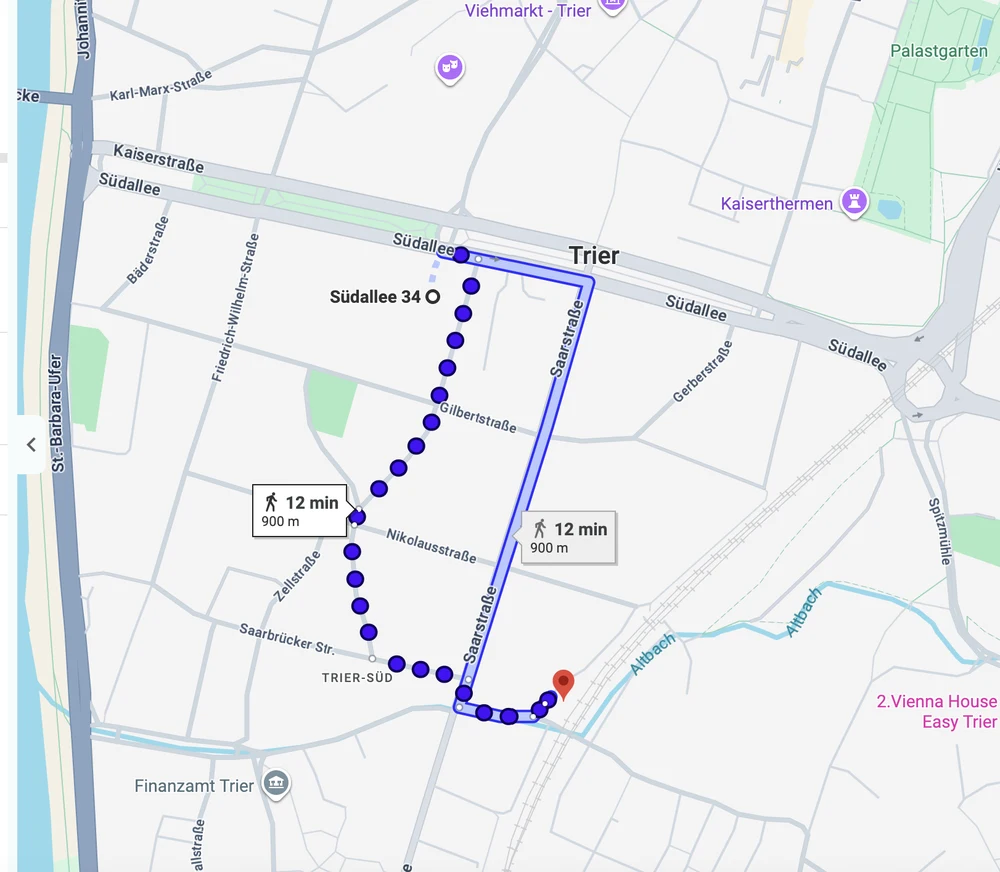
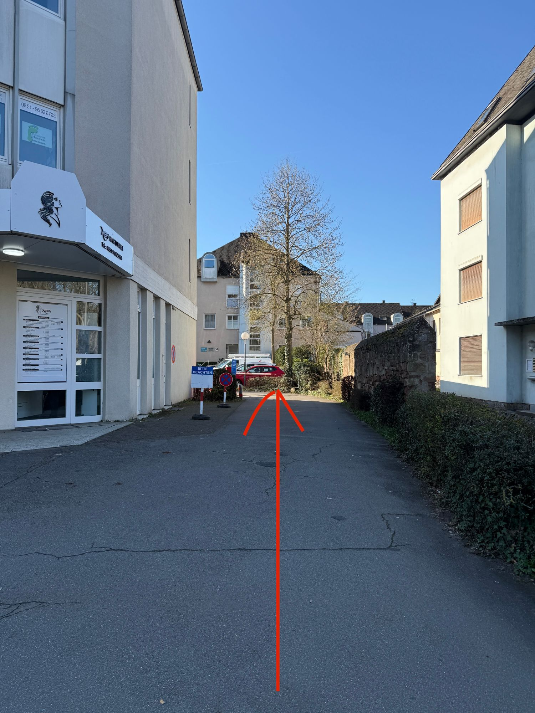
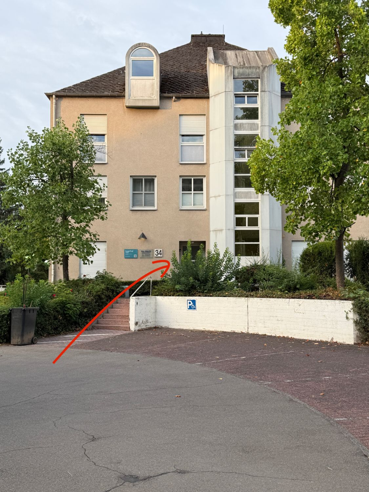

← Zurück zur Kontaktseite

Geben Sie in Ihren Navi: Südallee 33 ein. Dann werden Sie von der Mosel aus in die Südallee geleitet. Bei der 2. Ampel sehen Sie rechts den Frisör: NBN Hair Lounge. Sie fahren direkt bei diesem Haus rechts auf die Auffahrt bis zur Schranke, drücken auf den Knopf und die Schranke öffnet sich. Sie können auf diesem Parkplatz parken. Haarfrei Trier ist direkt hinter dem Parkplatz bei Hausnummer 34 über dem Zahnarzt. Von uns bekommen Sie kostenlos eine Ausfahrtmünze. Auf diesem Parkplatz ist ein Kommen und Gehen, meistens wird bald einer frei, falls mal alles besetzt sein sollte.
Mit dem Bus: Vom Hauptbahnhof erreichen Sie uns zum Beispiel mit der SWT-Linie 73 Richtung Euren in ca. 12 Minuten. Steigen Sie an der Haltestelle Trier Südallee/Kaiserstraße aus. Von dort gehen Sie etwa 200 Meter auf der Südallee bis zur NBN Hair Lounge und biegen direkt dahinter auf den Hof ab. Dort finden Sie uns in der Südallee 34.
Kartenausschnitt: © Google
Mit dem Zug: Sie können auch bis zum Bahnhof Trier Süd fahren. Von dort sind es etwa 900 Meter, ca. 12 Minuten zu Fuß.

Kartenausschnitt: © Google
Die Einfahrt

Der Eingang
